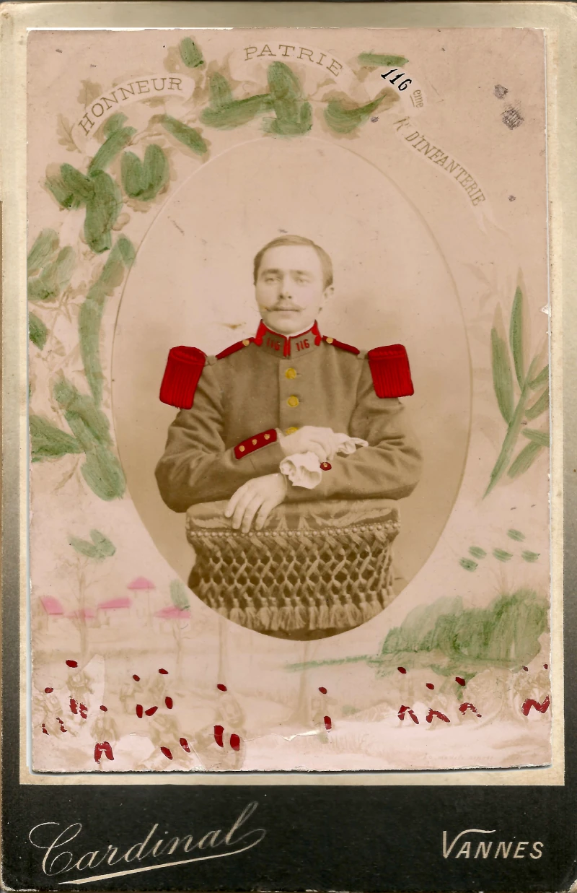
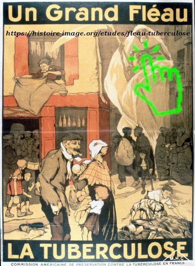

C’était l’expression souvent utilisée par la famille Edelin pour évoquer sa mort.
Dans le langage courant du début du XXᵉ siècle, c’était une façon plus douce et moins directe de parler
d’un décès causé par la tuberculose, qui était très répandue à cette époque.
Jean-Marie est né le 25 mai 1888 à Saint-Viaud (Loire-Inférieure). Il est le frère aîné d’Henri.
Il est cultivateur, selon son registre matricule, mais aussi sabotier, d’après son acte de décès.
Il est incorporé au 116ᵉ régiment d'infanterie, situé à Vannes, le 5 octobre 1910.
Il sera réformé très tôt pour cause de tuberculose.
Il sera témoin au mariage de son frère Henri en mai 1914.
Il décède de cette maladie le 23 mai 1917, à l'âge de 28 ans.
Les causes de décès de sa mère Marie(le 22 juillet 1917) et de sa sœur Jeanne(le 28 décembre 1918) se sont
perdues dans la mémoire familiale, mais lorsque la tuberculose s’installait dans une habitation,
il n’était pas rare que toute la famille y succombe.

Jean Marie Edelin (1910)
Carte postale (avril 1915) de Lorient, d’un copain
de régiment, adressée à Jean-Marie.
Il lui écrit
qu’il part en centre de convalescence
et qu’il n’est pas prêt d’aller voir
les "Boches".
Henri portait souvent des sabots.
Ceux sur la photo,
ont-ils été fabriqués par son frère ?
La tuberculose,
aussi appelée phtisie ou mal de poitrine,
jusqu'au dedut du 20eme siecle



Jean Marie Edelin
est "parti de la poitrine".
C’était l’expression souvent utilisée par la famille Edelin pour évoquer sa mort. Dans le langage courant du début du XXᵉ siècle, c’était une façon plus douce et moins directe de parler d’un décès causé par la tuberculose, qui était très répandue à cette époque.
Jean-Marie est né le 25 mai 1888 à Saint-Viaud (Loire-Inférieure). Il est le frère aîné d’Henri. Il est cultivateur, selon son registre matricule, mais aussi sabotier, d’après son acte de décès. Il est incorporé au 116ᵉ régiment d'infanterie, situé à Vannes, le 5 octobre 1910. Il sera réformé très tôt pour cause de tuberculose. Il sera témoin au mariage de son frère Henri en mai 1914. Il décède de cette maladie le 23 mai 1917, à l'âge de 28 ans.
Les causes de décès de sa mère Marie(le 22 juillet 1917) et de sa sœur Jeanne(le 28 décembre 1918) se sont perdues dans la mémoire familiale, mais lorsque la tuberculose s’installait dans une habitation, il n’était pas rare que toute la famille y succombe.
d’un copain de régiment, adressée à Jean-Marie.
Il lui écrit qu’il part en centre de convalescence
et qu’il n’est pas prêt d’aller voir
les "Boches".
Ceux sur la photo,
ont-ils été fabriqués par son frère ?
aussi appelée phtisie ou mal de poitrine,
jusqu'au dedut du 20eme siecle